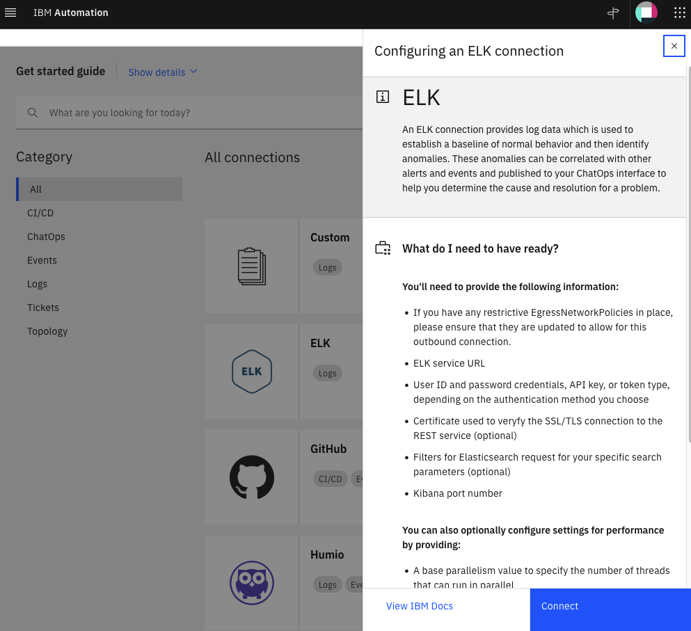
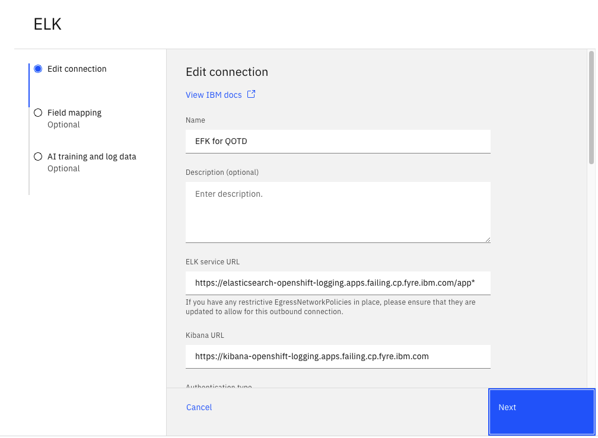
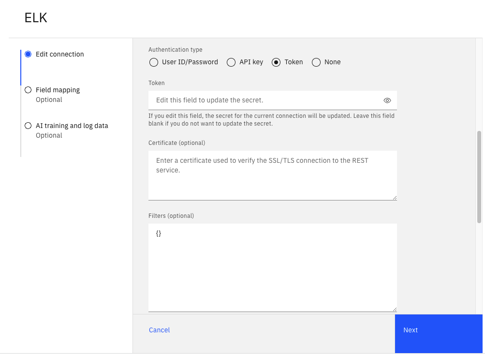
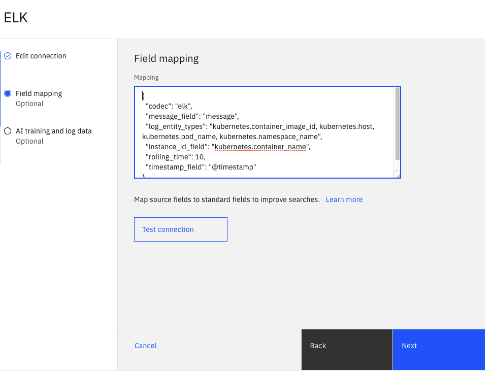
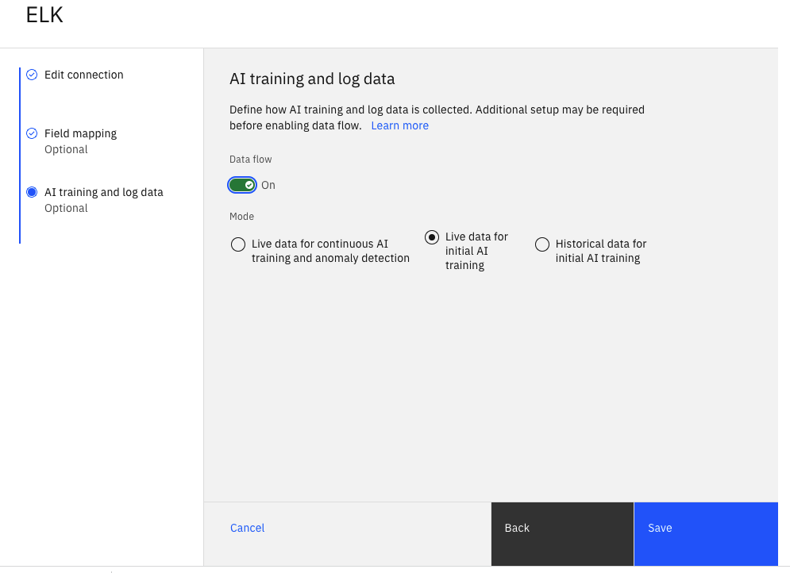

Welcome to the Watson AIOps v3.3 Lab
For full product documentation visit here.
Define ELK Integration
EFK is a variant of ELK. EFK is a suite of tools combining Elasticsearch, Fluentd, and Kibana that functions as a log aggregation tool. To simplify the installation and configuration effort for installing the different components of the EFK stack on OpenShift, we leverage the OpenShift Logging library from OpenShift. OpenShift customers that prefer not to spend part of their budget on a commercial log aggregator such as Humio, Splunk, or LogDNA, more than likely use the OpenShift Logging library.
To have AI Manager collect logs from the EFK installation that leverages the OpenShift Logging library, you need to define an ELK integration. Please note that it's not the purpose of this document to duplicate information that is already available in the Watson AIOps v3.3 IBM documentation for creating ELK integrations. We encourage you to go over those materials. However, here we provide the values that you should use for defining the ELK integration for the EFK installation you completed in the prior section (also, see screenshots below).

Name: Name of your liking for the ELK integration (e.g.EFK for QOTD).-
ELK service URL: The service URL for the EFK installation. Executing the command below should show you the hostname you need to build the Elastic URL:oc get routes -n openshift-logging | grep elasticelasticsearch elasticsearch-openshift-logging.apps.demo-apps.cp.fyre.ibm.com elasticsearch <all> reencrypt NoneOnce you have your Elastic hostname, you can build your URL such as
https://elasticsearch-openshift-logging.apps.demo-apps.cp.fyre.ibm.com/app*. Make sure that you use/app*as the path in the URL value. -
Kibana URL: The URL for Kibana. Executing the command below should show you the hostname you need to build the Kibana URL:oc get routes -n openshift-logging | grep kibana -
Authentication type: Set this value toToken. -
Token: The token for thecluster-logging-operatorservice account. You obtained this value in the previous section when you ran:token=$(oc sa get-token cluster-logging-operator -n openshift-logging) -
Kibana port: Use443for this field. Field mapping: Use the mapping shown below instead of the default mapping provided on the ELK integration:
{
"codec": "elk",
"message_field": "message",
"log_entity_types": "kubernetes.container_image_id, kubernetes.host, kubernetes.pod_name, kubernetes.namespace_name",
"instance_id_field": "kubernetes.container_name",
"rolling_time": 10,
"timestamp_field": "@timestamp"
}
-
Data flow: You can turn this on if you intend to start ingesting log data. -
Mode: If collecting log data for AI training, select theLive data for initial AI trainingoption. -
For all other fields, the default values can be used.





Project layout
mkdocs.yml # The configuration file.
docs/
index.md # The documentation homepage.
... # Other markdown pages, images and other files.